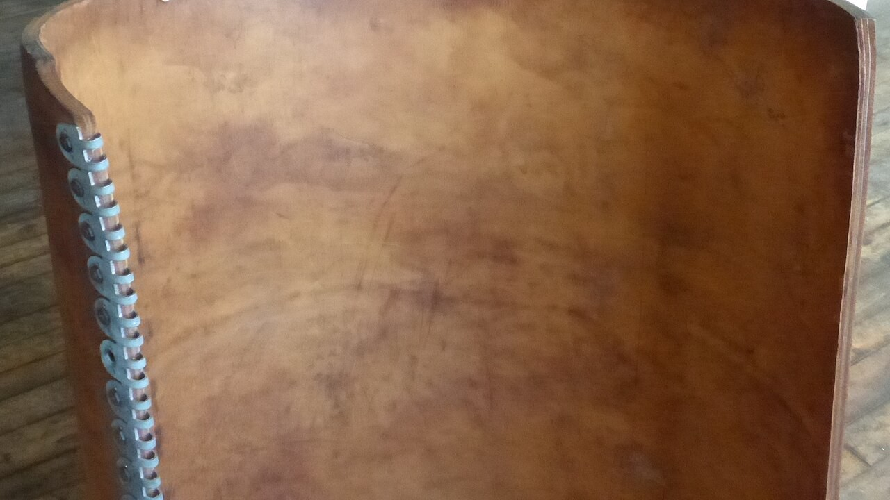
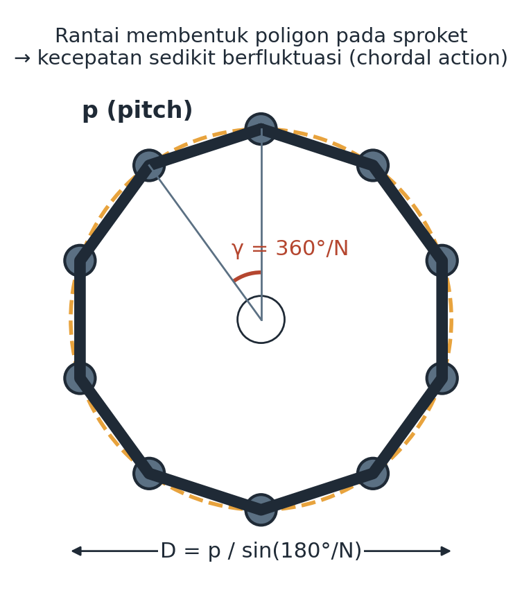

Pertemuan 12 · Sub-CPMK 4.2 · Sabuk-V + rantai rol + K3

Contoh 1: d=100, D=250, C=500, n1=1.450 → n2=580 rpm; θ=π−2(0,1506)=2,84 rad=162,7° ✓; L=1.561 mm → standar ±1.560.
Contoh 2 (P=3 kW, θ=2,84): V=π×0,1×1.450/60=7,59 m/s; F1−F2=3.000/7,59=395 N; rasio=e^(0,5123×2,84)=4,29; F2=395/3,29=120 N; F1=515 N; Fb=636 N (≈1,6× gaya efektif) → dipakai desain poros & bantalan. Sabuk terlalu kencang → Fb naik → bantalan cepat rusak.
Ks: seragam 1,0–1,2; kejut ringan 1,1–1,3; sedang (pencacah) 1,2–1,4; berat 1,3–1,5.
Contoh 3 (3 kW, Ks=1,2, nd=1,1, Pa=2,2): Pd=3,96; 1 sabuk nfs=0,61 ✗; Nb=2 → nfs=1,22 ✓.
Mesin pencacah: P=2,2 kW, d=90, D=180, C=400 → n2=720 rpm, V=6,79 m/s, F1−F2=324 N, θ=2,92 rad, rasio=4,45, F2=94, F1=418, Fb=512 N; Pa=1,3 Ks=1,3 → 2 sabuk nfs=0,91 ✗, 3 sabuk nfs=1,36 ✓.
Contoh 4 (P=2 kW, n1=300, N1=17, N2=34, Ks=1,3): 08A → D1=69,1 mm, V=1,08 m/s, F=2.409 N, n=5,8 < 7 ✗ → 10A: V=1,35, F=1.927, n=11,3 ✓. N1 minimal 17 (chordal action); C umum 30–50p.

Mengapa Fb jauh lebih besar dari F1−F2? Apa akibatnya bagi bantalan?
Pada pencacah, mengapa sabuk jadi komponen paling kritis?
Disusun dari 8 PPT kuliah + RPS Desain Komponen Mesin (3MES40016), Prodi Pendidikan Teknik Mesin FT Unimed. Rujukan: Shigley et al. (2015), Mott (2018), Juvinall & Marshek (2020), Sularso & Suga (2004).